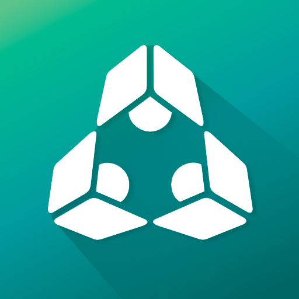
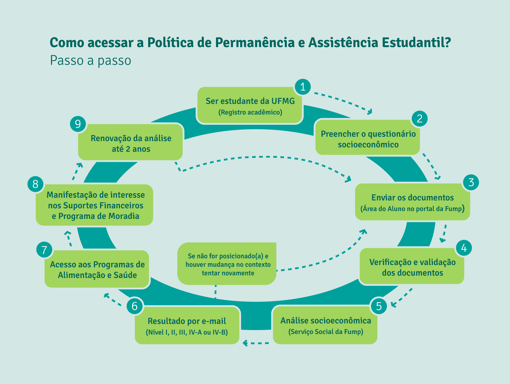

Portal integrador de login único. Acesse pelo computador para cadastrar sua senha inicial, entrar no SIGA Web e usar o e-mail institucional @ufmg.br.
Guia de Sobrevivência do Calouro
Manual prático e orientações para o ingressante no curso Noturno de Gestão Pública da UFMG
Acolhimento Discente Turno Noturno (19h - 22h30)
PARABÉNS PELA APROVAÇÃO NA UFMG!
Você agora é estudante de Gestão Pública na Faculdade de Filosofia e Ciências Humanas (FAFICH), no campus Pampulha da UFMG. O curso funciona no turno noturno, permitindo que muitos discentes conciliem a formação universitária de ponta com estágios, trabalho e pesquisa durante o dia.
Checklist Interativo dos Primeiros 30 Dias
Marque abaixo os passos já cumpridos na sua chegada à UFMG. O progresso fica salvo automaticamente neste navegador:
Salvo no Navegador
SEU PROGRESSO DE AMBIENTAÇÃO
0 de 6 concluídos (0%)
Aplicativos e Plataformas Essenciais do Calouro
Instale em seu smartphone os aplicativos oficiais e utilize as plataformas essenciais para sua rotina acadêmica na UFMG:
Aplicativo para Android e iOS: visualize horários de aula, número de faltas, notas parciais, avisos dos professores e sua carteirinha virtual de estudante.

Fundação Mendes Pimentel: consulte cardápios diários do Restaurante Universitário, agende consultas médicas e preencha o questionário socioeconômico.
Rastreamento colaborativo via GPS dos ônibus circulares gratuitos no campus Pampulha. Desenvolvido por discente da UFMG sob licença livre MIT.
---
## <span aria-hidden="true">🌙</span> A Rotina do Estudante do Turno Noturno {#rotina-noturna}
Estudar à noite na UFMG tem uma dinâmica própria que você precisa dominar desde a primeira semana para não perder aulas, refeições ou condução:
::: {.row .g-3 .mb-4}
::: {.col-md-6}
::: {.cagp-card}
### <span aria-hidden="true">⏰</span> Horários das Aulas e Presença {.fs-5}
- As aulas do turno noturno ocorrem de **segunda a sexta-feira, das 19h00 às 22h30**, divididas em dois blocos de 1h40 (com intervalo de 10 minutos).
- **Assiduidade:** O regimento da UFMG exige no mínimo **75% de frequência** em cada disciplina. Planeje seu deslocamento pós-trabalho para não sofrer reprovação por falta (infrequência).
:::
:::
::: {.col-md-6}
::: {.cagp-card}
### <span aria-hidden="true">🍽️</span> Logística da Alimentação Noturna (RUs) {.fs-5}
- **Jantar no Campus:** Servido exclusivamente no **RU Setorial II** (próximo ao ICB), das **17h10 às 19h30**.
- **Café da Manhã:** Exclusivo para estudantes Níveis I, II e III da assistência estudantil no **RU Setorial I**, das **06h40 às 08h15**.
- **Cobrança Política do CAGP:** O CAGP e o DA FAFICH cobram da PRAE e da FUMP a reabertura do jantar no Setorial I (vizinho à FAFICH) ou distribuição de marmitas no CAD 2, para evitar a subida íngreme à noite.
:::
:::
::: {.col-md-6}
::: {.cagp-card}
### <span aria-hidden="true">🚌</span> Ônibus Circulares Noturnos (Linhas 3 e 4) {.fs-5}
- Os **circulares internos são 100% gratuitos** e ligam as portarias da Av. Antônio Carlos e Catalão aos prédios até as 22h45.
- Para atender ao jantar no Setorial II, a PRA reforçou as viagens nos horários de pico:
- **Linha 3:** 16h40, 17h20, 18h00 e 19h05.
- **Linha 4:** 16h20, 17h00, 17h40 e 18h35.
- **Ao Vivo no Celular:** Acesse o app colaborativo livre [**Interno Rotas** (internorotas.com)](https://internorotas.com/){target="_blank" rel="noopener noreferrer"} para ver o GPS dos circulares em tempo real.
:::
:::
::: {.col-md-6}
::: {.cagp-card}
### <span aria-hidden="true">🛡️</span> Segurança e Iluminação no Campus {.fs-5}
- O campus Pampulha conta com iluminação reforçada na escadaria da Praça de Serviços até o Setorial II e rondas da vigilância interna (ramal de emergência: **3409-4444**).
- **Dica de Ouro:** Ao término das aulas às 22h30, desça para os pontos de ônibus ou estações do MOVE (Estação UFMG e Mineirão) em grupos de colegas.
:::
:::
:::
---
## <span aria-hidden="true">🗺️</span> Mapas do Campus Pampulha & Acessos Noturnos {#mapas-campus}
Localize os principais pontos da sua vivência noturna: a FAFICH, o CAD 2 (onde ocorrem diversas aulas compartilhadas), a Praça de Serviços e os Restaurantes Universitários.
::: {.cagp-map-card}
<div class="cagp-map-img-container">
<img src="imagens/mapa-pampulha-detalhado.jpg" alt="Mapa detalhado do Campus Pampulha da UFMG destacando FAFICH, CAD 2, Restaurantes Universitários I e II e portarias" class="cagp-map-img" loading="lazy">
</div>
<div class="cagp-map-caption">
<strong>Guia Espacial do Campus Pampulha:</strong> A FAFICH localiza-se próxima à Faculdade de Educação (FaE) e ao CAD 2. O <em>RU Setorial I</em> fica ao lado da FAFICH (aberto para café da manhã e almoço); o <em>RU Setorial II</em> (onde é servido o jantar das 17h10 às 19h30) situa-se na região biológica, acessível a pé ou via circulares linhas 3 e 4.
</div>
:::
::: {.callout-note}
### Mapas Setoriais e Unidades Acadêmicas
Você também pode consultar o [Mapa Integrado dos Campi da UFMG (Pampulha, Saúde e Montes Claros)](imagens/mapas-dos-campi.png){target="_blank"} para conhecer as conexões com as demais unidades da universidade.
:::
---
## <span aria-hidden="true">🎥</span> Tutoriais Oficiais em Vídeo (UFMG & Sistemas) {#videos-tutoriais}
Assista aos guias audiovisuais produzidos pela DTI, PRAE e canais oficiais da UFMG para tirar dúvidas rápidas sobre ferramentas e direitos:
```{=html}
<div class="cagp-video-grid">
<!-- Vídeo 1: SIGA UFMG -->
<article class="cagp-video-card">
<div class="cagp-video-thumb-wrap" onclick="this.innerHTML='<iframe width=\'100%\' height=\'100%\' src=\'https://www.youtube-nocookie.com/embed/JpBGj59NPqs?autoplay=1\' title=\'Conheça o SIGA UFMG\' frameborder=\'0\' allow=\'accelerometer; autoplay; clipboard-write; encrypted-media; gyroscope; picture-in-picture\' allowfullscreen></iframe>'">
<img src="https://i.ytimg.com/vi/JpBGj59NPqs/hqdefault.jpg" alt="Miniatura do tutorial oficial Conheça o SIGA UFMG" class="cagp-video-thumb" loading="lazy">
<div class="cagp-video-play-btn" aria-label="Reproduzir vídeo">▶</div>
</div>
<div class="cagp-video-body">
<h3 class="cagp-video-title">Conheça o SIGA UFMG</h3>
<span class="cagp-video-source">DTI • Diretoria de Tecnologia da Informação</span>
</div>
</article>
<!-- Vídeo 2: MinhaUFMG vs App Siga -->
<article class="cagp-video-card">
<div class="cagp-video-thumb-wrap" onclick="this.innerHTML='<iframe width=\'100%\' height=\'100%\' src=\'https://www.youtube-nocookie.com/embed/gZI42d0rrfk?autoplay=1\' title=\'MinhaUFMG Desktop ou App Siga no Celular?\' frameborder=\'0\' allow=\'accelerometer; autoplay; clipboard-write; encrypted-media; gyroscope; picture-in-picture\' allowfullscreen></iframe>'">
<img src="https://i.ytimg.com/vi/gZI42d0rrfk/hqdefault.jpg" alt="Miniatura do tutorial MinhaUFMG vs App Siga" class="cagp-video-thumb" loading="lazy">
<div class="cagp-video-play-btn" aria-label="Reproduzir vídeo">▶</div>
</div>
<div class="cagp-video-body">
<h3 class="cagp-video-title">MinhaUFMG ou App SIGA?</h3>
<span class="cagp-video-source">DTI / CECOM • UFMG</span>
</div>
</article>
<!-- Vídeo 3: Carteirinha e Biblioteca -->
<article class="cagp-video-card">
<div class="cagp-video-thumb-wrap" onclick="this.innerHTML='<iframe width=\'100%\' height=\'100%\' src=\'https://www.youtube-nocookie.com/embed/g8979vI6M-s?autoplay=1\' title=\'Carteira de Estudante UFMG e Bibliotecas\' frameborder=\'0\' allow=\'accelerometer; autoplay; clipboard-write; encrypted-media; gyroscope; picture-in-picture\' allowfullscreen></iframe>'">
<img src="https://i.ytimg.com/vi/g8979vI6M-s/hqdefault.jpg" alt="Miniatura do tutorial Carteira da UFMG" class="cagp-video-thumb" loading="lazy">
<div class="cagp-video-play-btn" aria-label="Reproduzir vídeo">▶</div>
</div>
<div class="cagp-video-body">
<h3 class="cagp-video-title">Carteira da UFMG & Bibliotecas</h3>
<span class="cagp-video-source">Universidade Federal de Minas Gerais</span>
</div>
</article>
<!-- Vídeo 4: Acessibilidade NAI -->
<article class="cagp-video-card">
<div class="cagp-video-thumb-wrap" onclick="this.innerHTML='<iframe width=\'100%\' height=\'100%\' src=\'https://www.youtube-nocookie.com/embed/4DonihIQXSM?autoplay=1\' title=\'Acessibilidade e Inclusão na Prática (NAI/UFMG)\' frameborder=\'0\' allow=\'accelerometer; autoplay; clipboard-write; encrypted-media; gyroscope; picture-in-picture\' allowfullscreen></iframe>'">
<img src="https://i.ytimg.com/vi/4DonihIQXSM/hqdefault.jpg" alt="Miniatura do vídeo Acessibilidade e Inclusão NAI" class="cagp-video-thumb" loading="lazy">
<div class="cagp-video-play-btn" aria-label="Reproduzir vídeo">▶</div>
</div>
<div class="cagp-video-body">
<h3 class="cagp-video-title">Acessibilidade & Inclusão (NAI)</h3>
<span class="cagp-video-source">Núcleo de Acessibilidade e Inclusão</span>
</div>
</article>
<!-- Vídeo 5: Saúde Mental DASE -->
<article class="cagp-video-card">
<div class="cagp-video-thumb-wrap" onclick="this.innerHTML='<iframe width=\'100%\' height=\'100%\' src=\'https://www.youtube-nocookie.com/embed/LzVLJ_zE8uM?autoplay=1\' title=\'Saúde Mental e Acolhimento Discente (DASE/PRAE)\' frameborder=\'0\' allow=\'accelerometer; autoplay; clipboard-write; encrypted-media; gyroscope; picture-in-picture\' allowfullscreen></iframe>'">
<img src="https://i.ytimg.com/vi/LzVLJ_zE8uM/hqdefault.jpg" alt="Miniatura do vídeo Saúde Mental DASE" class="cagp-video-thumb" loading="lazy">
<div class="cagp-video-play-btn" aria-label="Reproduzir vídeo">▶</div>
</div>
<div class="cagp-video-body">
<h3 class="cagp-video-title">Saúde Mental & Acolhimento</h3>
<span class="cagp-video-source">DASE • Pró-Reitoria de Assuntos Estudantis</span>
</div>
</article>
<!-- Vídeo 6: Direitos Humanos & Assédio -->
<article class="cagp-video-card">
<div class="cagp-video-thumb-wrap" onclick="this.innerHTML='<iframe width=\'100%\' height=\'100%\' src=\'https://www.youtube-nocookie.com/embed/dg8hXD2Qbp4?autoplay=1\' title=\'Direitos Humanos e Enfrentamento ao Assédio na UFMG\' frameborder=\'0\' allow=\'accelerometer; autoplay; clipboard-write; encrypted-media; gyroscope; picture-in-picture\' allowfullscreen></iframe>'">
<img src="https://i.ytimg.com/vi/dg8hXD2Qbp4/hqdefault.jpg" alt="Miniatura do vídeo UFMG contra o assédio" class="cagp-video-thumb" loading="lazy">
<div class="cagp-video-play-btn" aria-label="Reproduzir vídeo">▶</div>
</div>
<div class="cagp-video-body">
<h3 class="cagp-video-title">UFMG Contra o Assédio (Res. 07/25)</h3>
<span class="cagp-video-source">Ouvidoria Geral da UFMG</span>
</div>
</article>
</div>Conhecendo a FAFICH e os Espaços do Curso
A Faculdade de Filosofia e Ciências Humanas é uma das unidades mais tradicionais e politizadas da UFMG.
Onde Encontrar a Gestão e Pontos-Chave
- Salinha do CAGP (Pilotis da FAFICH): Espaço dos Centros Acadêmicos no pilotis térreo. Venha tomar um café, tirar dúvidas sobre professores, provas e percurso, e participar dos debates da gestão.
- Departamento de Ciência Política (DCP): Departamento acadêmico de vinculação do curso de Gestão Pública, no 3º andar da FAFICH.
- Biblioteca Setorial da FAFICH (2º Andar): Amplo acervo especializado em Ciência Política, Administração Pública, Sociologia, Economia e periódicos internacionais.
Atendimento Acadêmico: Secretaria vs. CEAG
Como estudante do noturno, você conta com dois guichês de atendimento presencial no 2º andar da FAFICH:
Secretaria do Curso
Sala 2039
Secretaria de Gestão Pública
Atendimento especializado em demandas curriculares exclusivas de Gestão Pública (contato direto com a coordenação).
- Secretários Oficiais: Wander Wenceslau Pereira / Ubirajara Dutra
- Horário Presencial: Quarta-feira, das 13h00 às 19h00
- Telefone: (31) 3409-3826
- E-mail Oficial: gestaopublica@ufmg.br
- Atribuições: Aproveitamento de estudos, validação de Formação Complementar Aberta (FCA), mudança de percurso e requerimentos pedagógicos.
Cobertura Noturna Contínua
2º Andar (Caixas)
CEAG FAFICH (Graduação)
Centro de Atendimento à Graduação da FAFICH. Ideal para o estudante do noturno protocolar processos sem faltar ao trabalho diurno!
- Horário Noturno: Segunda a sexta-feira, das 08h00 às 22h00
- Localização: Guichê em frente aos caixas eletrônicos (2º piso da FAFICH)
- Atribuições: Entrega de atestados médicos de alunos, protocolos de trancamento total/parcial, colação de grau, exame especial, certidões e histórico escolar autenticado.
Permanência Estudantil, Bolsas e Assistência
A Política de Permanência da UFMG é coordenada pela PRAE e executada pela FUMP, visando assegurar condições de igualdade para que todo estudante conclua o curso com dignidade.
Os Níveis de Classificação Socioeconômica (FUMP)
Após o preenchimento do questionário e análise dos assistentes sociais, os estudantes recebem um posicionamento:
Nível I
Extrema Vulnerabilidade
Isenção total (100% gratuita) das refeições no Restaurante Universitário (café, almoço e jantar), além de prioridade máxima em bolsas de permanência, moradia e auxílio transporte.
Nível II
Alta Vulnerabilidade
Subsídio ampliado de alimentação nos RUs e acesso prioritário aos programas de auxílio financeiro e manutenção de material acadêmico.
Nível III
Média Vulnerabilidade
Subsídio parcial de alimentação nos RUs, atendimento médico e odontológico gratuito e encaminhamento para programas de assistência estudantil.
Passo a Passo: Como Preencher o Questionário Socioeconômico
Todo discente que deseja pleitear benefícios (alimentação gratuita/subsidiada, moradia, auxílio transporte ou atendimento odontológico/médico) deve preencher o questionário:
- Onde acessar: Entre no portal oficial da FUMP em fump.ufmg.br e clique em Área do Aluno.
- Login com dados UFMG: Insira seu CPF e a senha cadastrada no sistema institucional.
- Seleção de Perfil para a FAFICH: No campo de categoria discente, selecione obrigatoriamente “Estudantes da Graduação”.
- Comprovação Documental: Envie cópias de contracheques/declarações de renda familiar, comprovante de residência atualizado e comprovantes de despesas médicas contínuas.
- Canais Diretos de Suporte FUMP:
- WhatsApp Oficial Pampulha: (31) 97537-0115
- Telefones:
(31) 3409-8401/(31) 3409-8470 - Atendimento presencial na sede da FUMP (Campus Pampulha, próximo à Praça de Serviços).

Passo a passo oficial da Fundação Mendes Pimentel (FUMP / PRAE UFMG)Saúde Mental, Diversidade e Acessibilidade no Campus
- Acolhimento Psicológico (DASE / PRAE): Oferece espaço de escuta e oficinas para controle da ansiedade acadêmica. Contato:
dase@prae.ufmg.br| Saiba mais no portal da PRAE. - Acessibilidade e Inclusão (NAI): Adaptação de provas e apostilas para pessoas com deficiência, intérpretes de Libras e mediação didática. Contato:
acessibilidade@ufmg.br| Tel:(31) 3409-4674. - Nome Social e Enfrentamento ao Assédio (Res. 07/2025 e 09/2015): Garantia de uso do nome social em carteirinhas, e-mails e diários, além de canal formal para denúncias na Ouvidoria Geral da UFMG.
Dicas de Ouro dos Veteranos do CAGP
TipCuide do seu Percurso desde o 1º Período
Disciplinas como Fundamentos da Análise Política (DCP 032), Metodologia (DCP 033) e Introdução à Economia (ECN 140) constituem alicerces para as disciplinas analíticas do 3º e 4º períodos. Não deixe matérias acumularem!
ImportantComece a Pensar nas Horas de Extensão (300h)
Lembre-se de que 10% da carga horária total (300 horas) são de Formação em Extensão Obrigatória (Resolução CEPE nº 10/2019). Visite a página de Extensão & AAC para entender como integralizar essas horas através de projetos PROEX e na Equalitas Consultoria Jr.
NoteConte Sempre com o Centro Acadêmico
O CAGP existe para garantir que sua passagem pela universidade pública seja justa, rica e acolhedora. Qualquer dúvida com colegiado, professores ou dificuldades acadêmicas, fale com a nossa diretoria. Você também pode consultar todos os Documentos Oficiais, PPC e Regulamentos do Curso →.